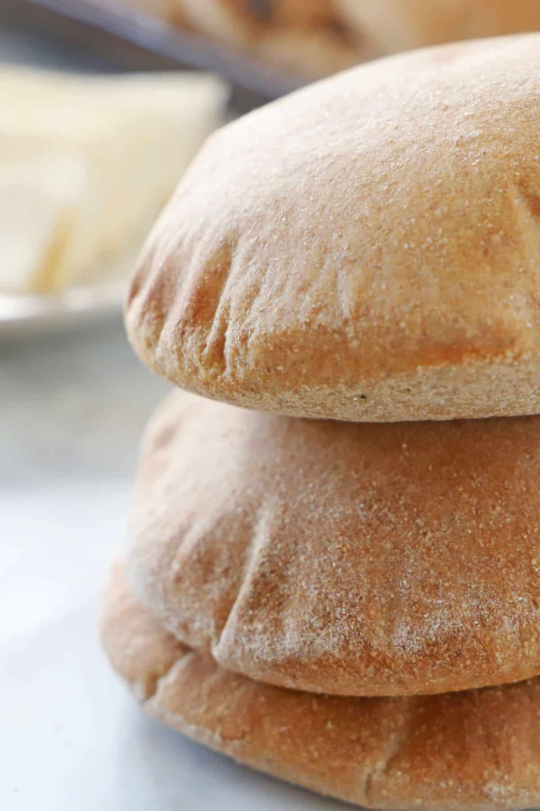

Pitta recipe

Bake this perfect gluten-free pita bread from scratch with a few simple ingredients. A wonderful gluten-free alternative for sandwiches and snacks.
- 1 ¼ cups gluten-free oat flour
- ½ cup potato starch
- ⅓ cup cornstarch
- ⅓ cup tapioca flour
- 2 tablespoons xanthan gum
- 1 tablespoon active dry yeast
- 1 teaspoon white sugar
- 1 teaspoon salt
- 1 cup warm milk
- 1 egg
- ¼ cup olive oil
- 1 teaspoon apple cider vinegar
back to main page